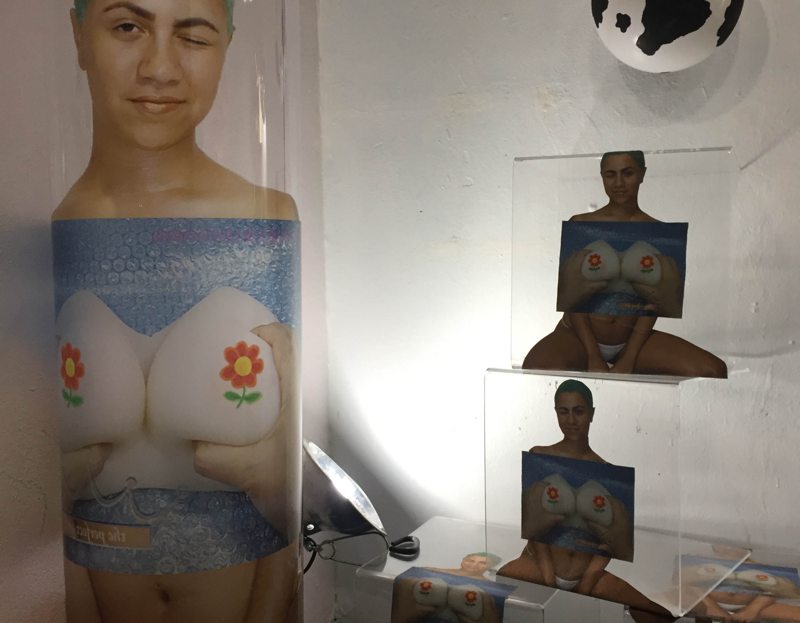
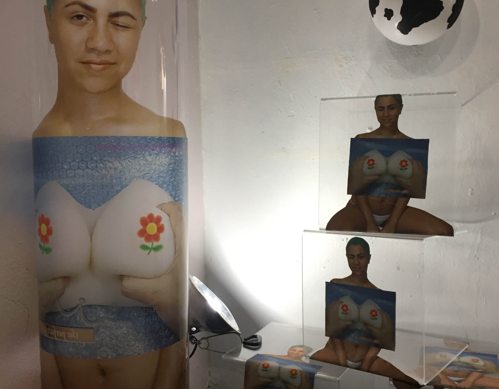

Three Weeks Internet Hiatus by Weeks.
Where do we coordinate ourselves in the gridmap of Internet and Identity? Three Weeks is a brand and a person. Fake accounts of real people, alternate universe people, rogue people, hurt people, people hired to be somebody else, bots with people avatars, words without a person at all. Lines blurred then intersected by consumerism, media, entertainment then blurred again. A deliberate and constant shift of powers, surveillance, representation. It may seem random, but ultimately the algorithms, trends, commercials, power structures work in favor of white supremacy, cis het supremacy. Three Weeks calls for a internet hiatus to gather selves who are erased by dominant media, and build physical reminders that we are here. Weeks incorporates a variety of digital prints, handmade tchotchkes, and the detritus of failed projects. Old Facebook statuses dug up, printed out collaged with denim and plexiglass. I touch my jeans, I touch my screen, I publish this blurb on Facebook.
 
